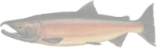
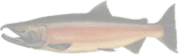
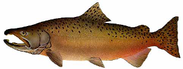
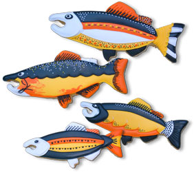

Pat's Salmon Cookie Shops
Pat's Salmon Cookie Shops
Why Salmon Cookies?
Three years ago, Pat lost a bet with his wife Felicia. Felicia was feeling particularly vindictive and decided to use Pat's passion for baking for punishment. He was instructed to make a cookie with fish in it and eat it in front of the gloating Felicia and their two children. He had some smoked salmon handy, so he ground it up as finely as he could and added it to his signature delicious chocolate chip cookie recipe. His victorious wife watched the process like a hawk, making sure that he actually included the salmon in the cookies.
Soon, the cookies were baked and ready to eat. Surprisingly, a delicous scent permeated the room when Pat opened the oven door. Felicia's face expressed her anticipation at seeing Pat's reaction to eating the salmon infused confection. Unable to put it off any longer, Pat picked up a cookie and gingerly (though this particular cookie did not contain ginger) took a bite.
And smiled. The cookie was exceptionally delicious! Felicia's disappointment and confusion about why Pat's face was not contorted in the universal sign of "this tastes horrible" soon gave way to curiousity. She tried one of the cookies herself. Pat wasn't kidding - they were delicious! So delicious, in fact, that Felicia traded her favorite salmon-shaped throw pillows for a promise that Pat would keep making salmon cookies. Since that fateful afternoon, Pat has been perfecting his already tasty salmon cookie recipe, and making the world a more wonderfully flavorful place.